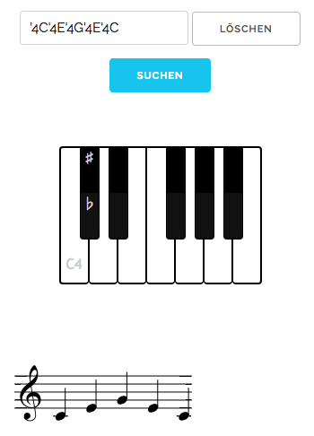
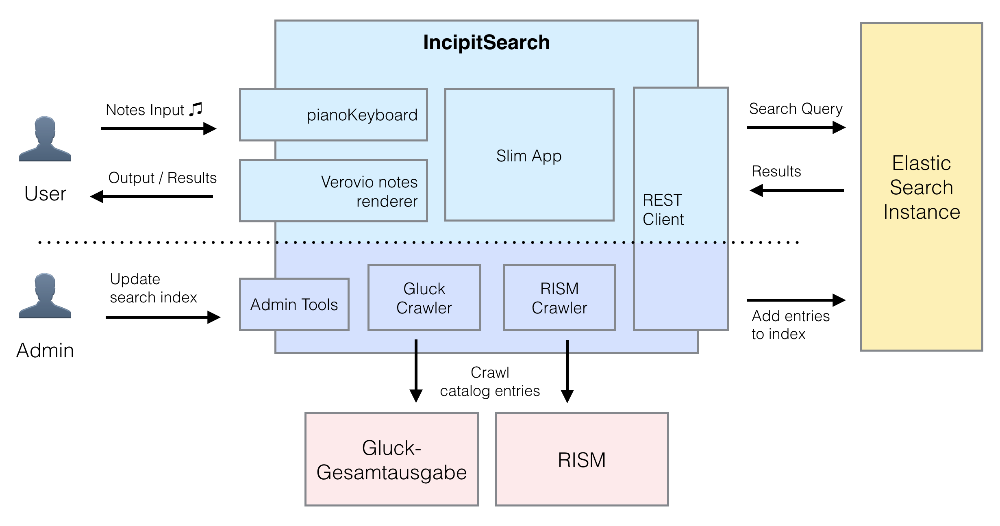
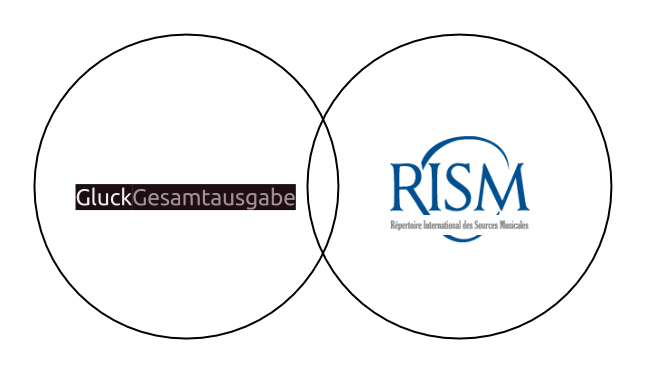

09.10.2016 | NRW Akademie der Wissenschaften und der Künste
Workshop „Nachnutzung und Nachnutzbarkeit der Forschung im Akademienprogramm“
Ebenen der Nachnutzung von Forschungsdaten in der Mainzer Akademie
Fünf Projektbeispiele
Slides: https://digicademy.github.io/2016-agehum-ddorf
Team der Digitalen Akademie |
 @digicademy |
@digicademy |
 digicademy |
CC-BY 4.0
digicademy |
CC-BY 4.0
Gliederung
- Regesta Imperii: Nachnutzung von Forschungsdaten in Studium, Lehre und Kulturprojekten
- Deutsche Inschriften: Nachnutzung von Forschungsdaten in Drittmittelprojekten
- Controversia & Confessio: Nachnutzung von Forschungsdaten mittels digitaler Forschungsmethodik
- Gluck Gesamtausgabe: Austausch von Forschungsdaten zwischen Akademieprojekten
- PROPYLÄEN: Nachnutzungsstrategien für Forschungsdaten bei Neuvorhaben - Voraussetzungen schaffen
01
Regesta Imperii
Nachnutzung von Forschungsdaten in Studium, Lehre und Kulturprojekten
Regesta Imperii
- Online sind 180.000 Regesten im Volltext verfügbar
- Nutzbar über unser Suchinterface
- Über REST-Schnittstelle können nach CEI kodierte Dateien abgefragt werden
- Alle Daten stehen unter CC BY 4.0-Lizenz
Regesta Imperii
Erklärseite für REST-Schnittstelle
Regesta Imperii
Unterzeile
Regesta Imperii Fazit
- Nachnutzer fragen in der Regel nach Excel- oder JSON-Formaten
- Nachnutzer der REST-Schnittstelle haben oft Probleme mit der Flexibilität des XML-Formats
- Projekt- und Datenstrukturen werden über REST-XML-Schnittstelle nur unzureichend und nicht selbsterklärend abgebildet
02
Deutsche Inschriften
Nachnutzung von Forschungsdaten in Drittmittelprojekten am Beispiel des “Referenzkorpus Deutsche Inschriften”
“Die Deutschen Inschriften”
Beispiel zu Bereitstellung und Nachnutzung von Forschungsdaten im Rahmen von Akademieprojekten
- Offene Daten-Schnittstelle (REST, derzeit noch “Alpha”) – Custom-XML, TEI-EpiDoc, JSON
- Konzept zur freien Lizenzierung – CC BY 4.0
- Weitere konzeptuelle und praktische Fragestellungen
- Bereitstellung von adäquaten Bilddateien (TIF) und Bild-Metadaten (XMP) [semi-diplomatische Transkription, Graphematischer Wandel]
- Bereitstellung von Subsets der Forschungsdaten (nur Kopfdaten, Filterung nach bspw. Überlieferungsprozess, Sprache, …)
- Bereitstellung mehrerer, heterogener Daten-Formate (“Reintext”, CharSV, XML-Flavors, JSON, …)
- “Gleichgewicht” zw. spezialisierten und offenen Datenformaten
- Erfolgreiche Nachnutzung durch die Projekte “Inschriften im Bezugssystem des Raumes” (IBR) und “Referenzkorpus Deutsche Inschriften” (ReDI)
“Referenzkorpus Deutsche Inschriften”
Überblick
- Sprachhistorisch-linguistische Forschung (Referenzkorpus historischer Texte des Deutschen)
- Grammatische Annotation (STTS/HiTS; ANNIS-DB)
- Prinzip der Originaltreue, Primärquellen- und Abbildungsabgleich
Nachnutzung im Referenzkorpus
Erfahrungen …
- Aufbereitung notwendig:
- Transformation XML zu CSV bzw. LML
- Bereitstellung von Kopfdatensätzen (CSV) und Textdatensätzen (TXT)
- Projektspezifische Vorstrukturierung der Textdatensätze
- Kommunikativer wie programmiertechnischer Overhead
Fazit
… und Schlussfolgerungen
- Gelernt wurde, dass …
- … Datenbereitstellung und Nachnutzung einen iterativen Prozess einleitet.
- … es mehr Nachnutzungsszenarien geben wird, als das Daten bereitstellende Projekt antizipieren kann.
- Trotz offener Schnittstelle und Doku wird es …
- … unterschiedlichste Kommunikationsbedarfe geben.
- … Bedarf zu technischer Unterstützung geben (e.g. Transformationen).
03
Controversia & Confessio
Nachnutzung von Forschungsdaten mittels digitaler Forschungsmethodik
Controversia & Confessio
Das Akademievorhaben: Quellenedition zur Bekenntnisbildung und Konfessionalisierung (1548-1580)
- Kooperationsprojekt der ADW Mainz und des IEG Mainz
- Edition theologischer Streitkultur der Wittenberger Reformation
- dokumentiert die Grundsatzdiskussionen um Luthers Erbe, die wesentlich zur Identitätsbildung des Protestantismus Wittenberger Prägung beitrugen, anhand von Streitschriften, die oft gegen einen Gegner geschrieben wurden
- Daten unter CC BY 4.0-Lizenz
Controversia & Confessio
Das Forschungsprojekt: Identität durch Abgrenzung - Streitschriften und reformatorische Diskursnetzwerke
- Netzwerkanalytische Untersuchung der Autoren- und Gegnerbeziehungen der Streitschriften
- Fokus auf spezifischen Strukturen der von Streitschriften getragenen reformatorischen Diskussions- und Streitkultur
- Zentralität und Prestige von Akteuren, Gegenüberstellung der verschiedenen Arten von Kontroversen (sach- und personenbezogen), etc.
Controversia & Confessio
Das Forschungsprojekt: Identität durch Abgrenzung - Streitschriften und reformatorische Diskursnetzwerke
{kind=link}
Controversia & Confessio
Erfahrungen und Herausforderungen
- Tätigkeit in Akademievorhaben ebenso wie in Forschungsprojekt ermöglichte Einblicke in Anforderungen beider Seiten
- Wichtig auf Seiten Content-Provider v. a. Datenqualität und -normierung
- Je nach Projekt Bedarf nach verschiedenen, nicht notwendigerweise komplizierten Exportformate (z. B. csv)
- Feedback durch nachnutzendes Projekt großes Potential für Verbesserung und Erweiterung Daten
- Nachnutzung bringt neue Perspektiven auch für Projekt selbst
04
Gluck Gesamtausgabe
Austausch von Forschungsdaten zwischen Akademieprojekten

Gluck Gesamtausgabe
Ziel – Implementierung einer Incipit-Suche im GluckWV-online
- Codierung der Editions-Incipits in Plaine & Easie Code
- Einfacher menschenlesbarer Bibliotheksstandard für die Codierung von Notationssystemen
- Entwickelt und kuratiert von der IAML und dem RISM
- Editions-Incipits werden in Incipit-Katalog hinterlegt und von einer Elasticsearch-Engine indiziert
- Die Verarbeitung einer Suchanfrage erfolgt in normalisierter Form
- Nachnutzug: Gleichzeitig werden die Incipits des RISM-Quellenkatalogs als zusätzliche Datengrundlage mitabgefragt
Gluck Gesamtausgabe
Struktur

Gluck Gesamtausgabe
Nachnutzung

05
PROPYLÄEN. Goethes Biographica
Nachnutzungsstrategien für Forschungsdaten bei Neuvorhaben - Voraussetzungen schaffen
PROPYLÄEN
Factsheet
- Editionen von Goethes Biographica (Briefe, Tagebücher, Begegnungen und Gesprächen)
- Aufbau einer digitalen Forschungsplattform
Projekte mit Nachnutzungsinteresse
- Korrespondenz-Metadaten: correspSearch - Verzeichnisse von Briefeditionen durchsuchen
- Text- und Bildmetadaten: Forschungsverbund MWW - Digitale Infrastruktur
PROPYLÄEN
Standards
- Textdaten: Ausgabe in TEI: Text Encoding Initiative
- Briefwechsel-Metadaten: Correspondence Metadata Interchange-Format (CMI)
{kind=link}
- Digitalisate und Image-Metadaten: IIPImage Server nach International Image Interoperability Framework (IIIF)-Spezifikationen sowie IPTC/XMP
- Für Verknüpfung mit externen Ressourcen: RDF, Semantic Web Onthologies (Linked Open Data)
PROPYLÄEN
Adressierung
Verwendung von persistenten Identifikatoren für alle digitalen Projektressourcen mit Blick auf Zitierfähigkeit und auf die Formulierung logischer Aussagen (RDF-Triple)
- Verwendung des EPIC PID Services von Dariah geplant
- intern: EPIC-PID-Handle, PID sprechend gestaltet
- nach Außen zusätzlich: sprechende URLs (Permalinks)
PROPYLÄEN
Lizenzierung
Die Kooperationspartner „sind dem Gedanken des Open Access verpflichtet und verfolgen aktiv Publikationsmodelle für Veröffentlichung unter freier Lizenz.“ Die ADW Mainz interpretiert Open Access und freie Lizenz im Sinne der Open Definition 2.1. Das bevorzugte Lizenzmodell ist CC BY 4.0
- philologische Ergebnisse: Download von Abbildungen und Textdaten
- Applikationen und Präsentationen: Bereitstellung auf Github
Literatur & Links
Literatur
- One
- Two
- Three
Links
- correspSearch
- EPIC PID Services
- Forschungsverbund Marbach-Weimar-Wolfenbüttel
- International Image Interoperability Framework
- Open Definition 2.1
- Swoogle – Semantic Web Search
- XMP Schema corresponding to IIM 4.1
Download
- Repository: https://github.com/digicademy/2016-agehum-ddorf
- Slides: https://digicademy.github.io/2016-agehum-ddorf
- Lizenz: CC-BY 4.0, Digitale Akademie